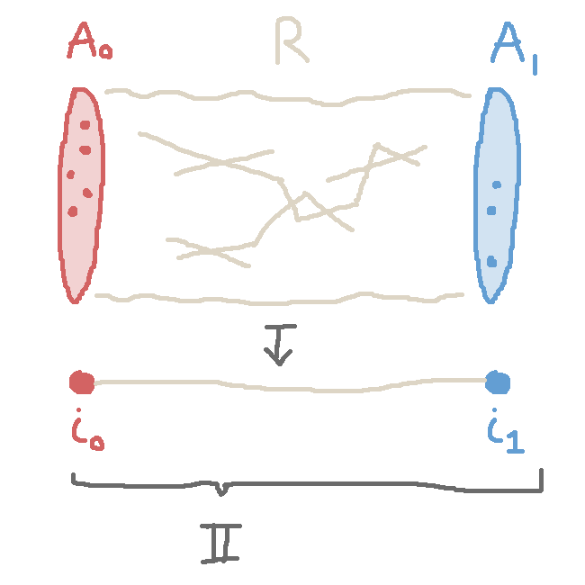
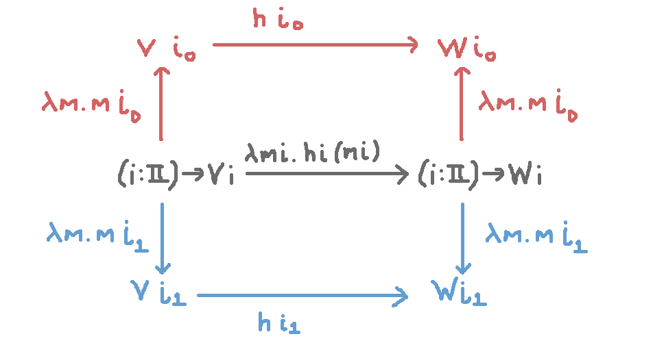
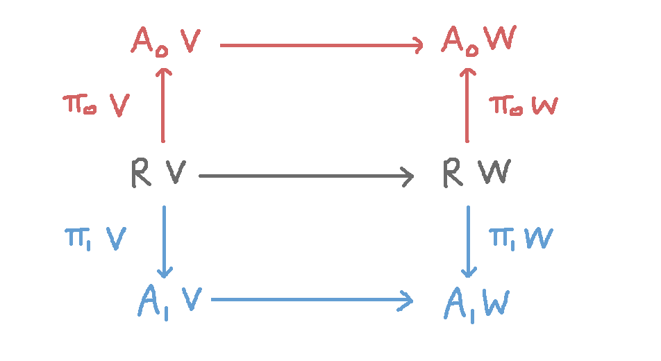
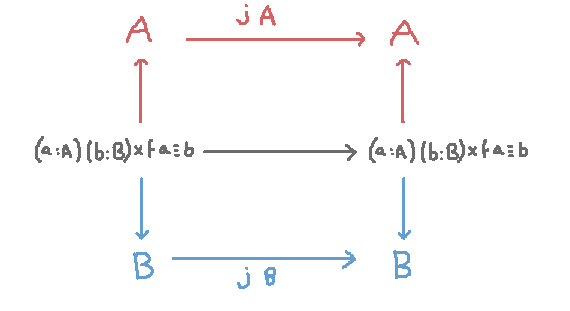
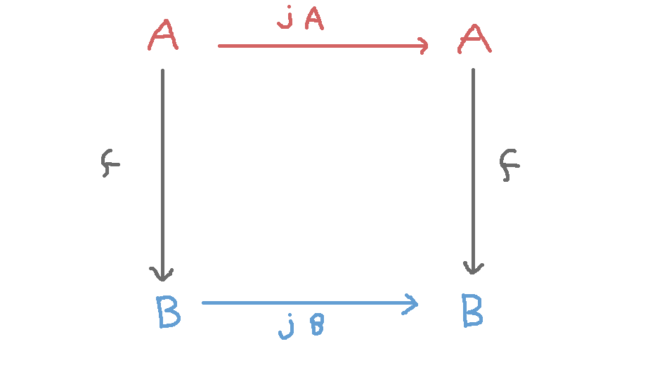

A Postulate for Internalized Parametricity
Update! Everything Below Is Perhaps Bunk! Evan Cavallo shrewdly sniffed out the fact that the below idea runs into a gap if you try to show free theorems
for any nontrivial polymorphic type where the type variable occurs negatively.
I had the follow-up thought about the previous post, and though I have no particular confidence
that it is consistent and/or novel, I thought I'd write it down anyways.
Suppose we postulate first of all that there is a "bridge interval"
(to borrow a term of this paper, which I have not fully digested, and which may for all I know do everything I'm doing here but better) type $\I$ that has two known points
$i_0, i_1 : \I$.
From any type family $V : \I \to \rset$ we can derive a (binary, proof-relevant) relation. I'm
going to use record notation and say the type of relations is
\[\rrel := \{ A_0 : \rset, A_1 :\rset, R : \rset, \pi_0 : R \to A_0, \pi_1 : R \to A_1 \}\]
Then we can make some definitions
| $A_0 : (V : \I \to \rset) \to \rset$ | $ A_0\ V = V\ i_0$ |
| $A_1 : (V : \I \to \rset) \to \rset$ | $ A_1\ V = V\ i_1$ |
| $R : (V : \I \to \rset) \to \rset$ | $ R\ V = (i:\I)\to V\ i$ |
| $\pi_0 : (V : \I \to \rset) \to R\ V \to A_0\ V$ | $ \pi_0\ V\ r = r\ i_0$ |
| $\pi_1 : (V : \I \to \rset) \to R\ V \to A_1\ V$ | $ \pi_1\ V\ r = r\ i_1$ |
And bundle all this up as
$mkr : (\I \to \rset) \to \rrel$
$ mkr\ V = \{$
$\qquad A_0 = A_0\ V,\ A_1 = A_1\ V,R = R\ V, \pi_0 = \pi_0\ V,\ \pi_1 = \pi_1\ V$
$\}$
The set $A_0$ is the fiber over $i_0$, the set $A_1$ is the fiber over $i_1$,
and the $R$ consists of the global elements of the indexed set $V$.
Each global element can be instantiated to give an element of $A_0$ or $A_1$,
so we really do have a span across $A_0, A_1$.

The Postulate
Now consider what happens if we postulate that
$mkr$ is an equivalence
That is, $mkr$ has some inverse
\[mkr^{-1} : \rrel \to \I \to \rset\]
and so every relation arises as the $mkr$ of some $\I \to \rset$.
Preserving Relations
Next we we want to observe that whenever we have $V, W : \I \to \rset$,
every map of the form
\[ h : (i:\I) \to V\ i \to W\ i \]
induces a relation-preserving map.
Namely, the map
\[\lambda m.\lambda i. h\ i\ (m\ i) : ((i:\I)\to V\ I) \to ((i:\I)\to W\ I)\]
goes by definition also $R\ V \to R\ W$, and can be seen to commute
with the maps
\[h\ i_0 : V\ i_0 \to W\ i_0 = A_0\ V \to A_0\ W\]
\[h\ i_1 : V\ i_1 \to W\ i_1 = A_1\ V \to A_1\ W\]
In other words, we have a commutative diagram

or equivalently by definition,

Parametricity
Suppose we'd like to show the canonical example free theorem that
\[j : (A : \rset) \to A \to A \]
must be the identity function.
We can do this by showing that $j$ appropriately commutes with any
function $f : A \to B$, i.e. by showing
\[(f : A \to B) \to f \o j\ A = j\ B \o f \tag{*}\]
because if that were true, then for any $a : A$ we could set $f$ to
$K\ a$, the constantly-$a$ function $A \to A$, and find that
\[(a : A) \to K a \o j\ A = j\ A \o K\ a\]
and therefore
\[(a : A) \to a = j\ A\ a\]
so $j$ would be the identity function.
Now to show (*), define $\rho : \rrel$ to be the underyling relation
of the function $f$, i.e.
\[\rho = \{ A_0 = A,\ A_1 = B,\ R = (a : A) (b : B) \x f\ a \equiv b,\]
\[\pi_0\langle a, b, q \rangle = a,\ \pi_1\langle a,b,q\rangle = b \}\]
What happens when
we apply $j$ to the type $mkr^{-1}\ \rho \ i$ for various $i:\I$?
We obtain
\[ h = \lambda i . j\ (mkr^{-1}\ \rho \ i) : (i:\I) \to mkr^{-1}\ \rho \ i \to mkr^{-1}\ \rho \ i\]
This is an example of an $h$ from the previous section about preserving relations!
So we obtain a commutative diagram, where the top and bottom horizontal maps
are $h\ i_0$ and $h\ i_1$. But in particular our $h\ i_0$ is equal to
\[ j\ (mkr^{-1}\ \rho \ i_0) = j\ (A_0\ (mkr^{-1}\ \rho))\]
\[= j\ ((mkr (mkr^{-1}\ \rho)).A_0)\]
\[= j\ (\rho.A_0)\]
\[= j\ A\]
and likewise \[h\ i_1 = j\ B\]
So what we have is a commutative diagram

which can be massaged into

as required.